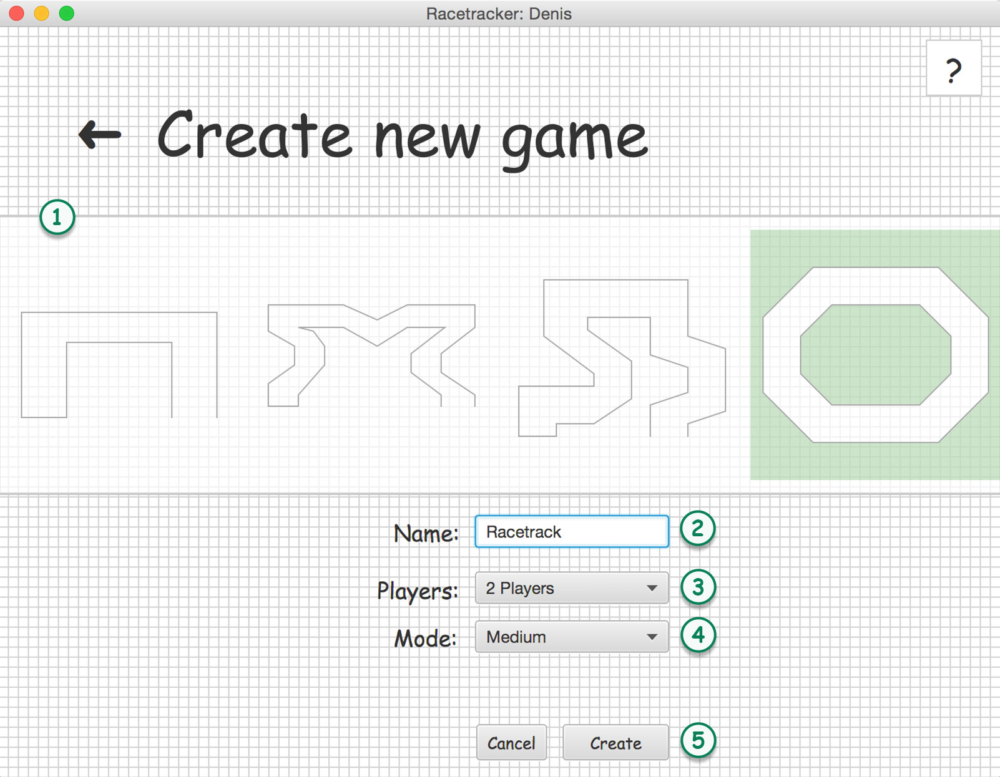
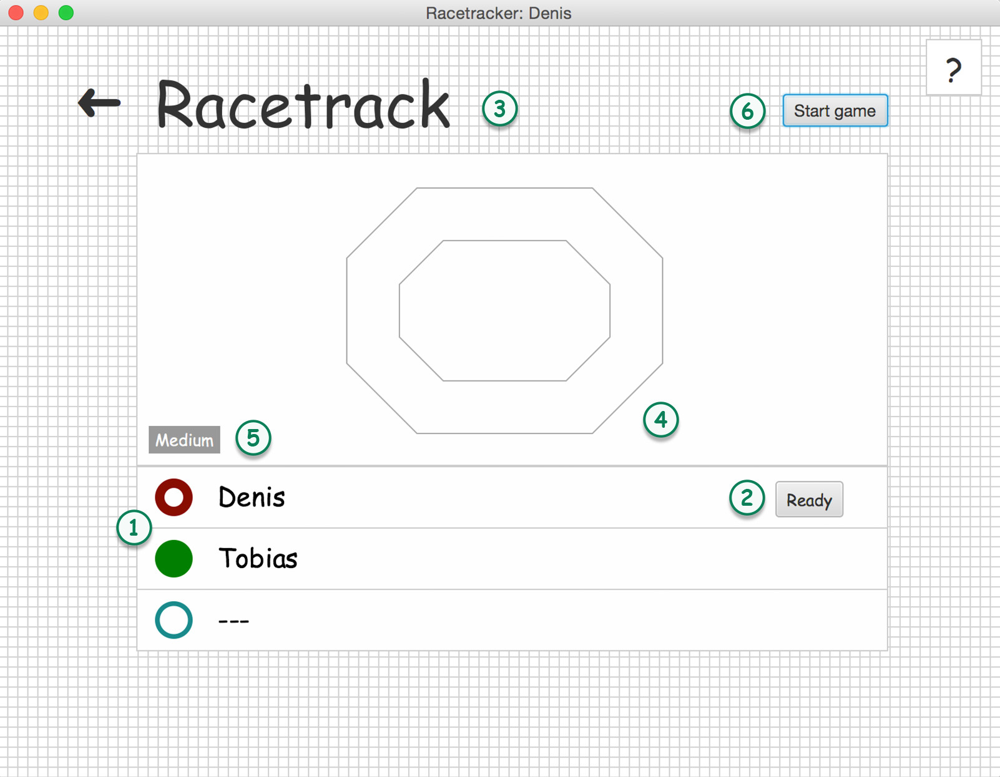
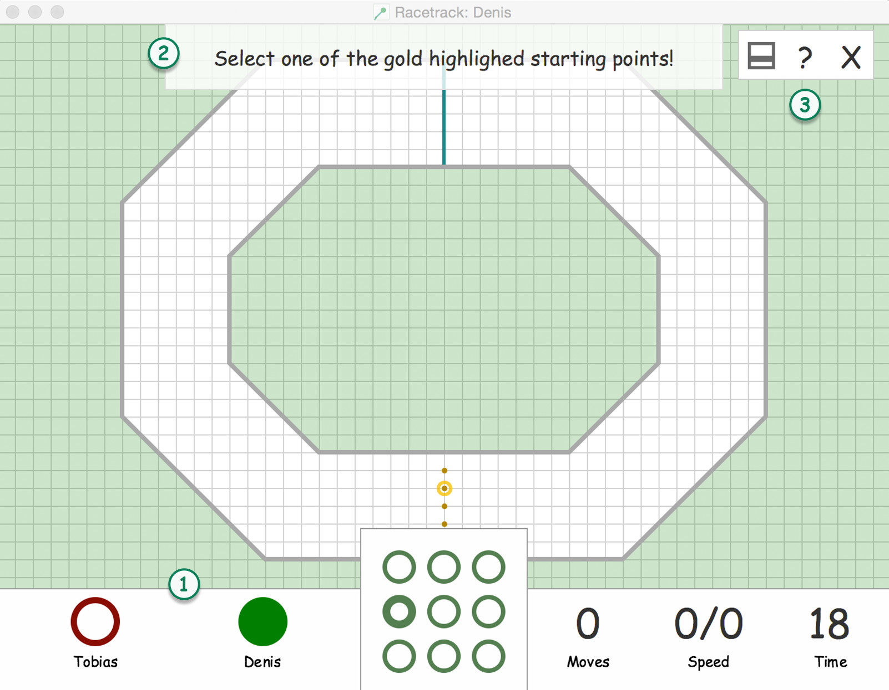

Racetrack Help
Welcome to Racetracker!
We are pleased to see you choosing Racetracker and play a game.
Let me introduce you to the game and show you some of the features you can expect from the game.
Setup connection
This is the first scene you will encounter after launching Racetracker.
In this scene, you have to set up a connection to a game server which can host games.

- Enter a valid IP-V4 address for the host.
- Enter a valid port for the host connection.
- Enter a user name. If the user name you have chosen is already taken by someone else, a suffix will be added to make your name unique.
-
The Save-button will be enabled if all fields contains valid content.
The Save button will be enabled if all fields contain valid content. After pressing the button a connection to the host server will be established. If this is not possible, the host ip and port fields will be outlined by red. After establishing a connection to the server, your username will be sent and the field will be colored yellow. After getting confirmed by the server, the field will be outlined green and you will be redirected to the main scene of the game. - HELP: On every screen you will find a help button in the upper right corner. Pressing it, will show you a help for the current scene with additional information to all important subjects seen on the scene.
Start scene
- Go to the list of games.
- Go back to the Setup scene.
- Quit the game.
List of games
In this scene you will see a list of all available games on the server. This scene will only be updates if you press the reload button.
You can also create new games or join existing ones.

-
Each of those cards represent one game.
First you will see a preview of the map. Second the game name will be shown. As the third column you can get an overview about how many players can join the game (number of circles) and how many players have already joined the game (number of filled circles). Next there are two columns displaying the host name and the play mode*. The last column gives you the oporunity to 'join the game'. - Use this button to join a particular game. (If it doesn't work, please use the reload button.)
- Create a new game.
- Reload button; use the reload button to refresh the list of games and see the updated list of games.
Play modes: There are three different play modes you can play. Those modes are set during the creation of the game.
EASY; defines no changes to the game itself.
MEDIUM; forces every player to move within 10 seconds.
HARD; forces every player to move within 5 seconds.
Create a new game
After pressing the create new game button in the list of games, the create new game scene will be presentet. Use this scene to create new games in five easy steps.
- Choose one of the predefined maps.
- Set a meaningful name for the game.
- Set a maximum number of players that can join you game. This will not be the final number of player who will play this game. Read more about it in the join a game section.
- Set a play mode for the game.
- Pressing the create button will send a server request to create the new game. After getting a server response you will be automatically redirected to the joing game scene.
Play modes: There are three different play modes you can play. Those modes are set during the creation of the game.
EASY; defines no changes to the game itself.
MEDIUM; forces every player to move within 10 seconds.
HARD; forces every player to move within 5 seconds.
Joining a game
Either by clicking the join button or after creating your own game, this scene will show you the players by name who will play with you in a game.
- If a player 'is ready to play' his or her circle will be filled. If not, the circle will be half full. If there are empty places those circles will have minimum sized border and two dashes as the name.
- Press the ready button to indicate your status. This will give the host the option to see who have time to play right now or need some additional time to prepare.
- The name of the game.
- A small map preview.
- The play mode for this game.
-
This button is only visible to the host and gives him or her the ability to start the game at any point. By pressing this button all currently assigned players will be automatically set to 'ready' and the game starts.
The game will start as well, if all currently participating players are ready.
Play modes: There are three different play modes you can play. Those modes are set during the creation of the game.
EASY; defines no changes to the game itself.
MEDIUM; forces every player to move within 10 seconds.
HARD; forces every player to move within 5 seconds.
Let's start the game
This scene is the main game scene and shows all important parameters.
- On the lower left, all players will be listed. The current active player is highlighted with a filled circle. If one of the players does not participate any more either by leaving the game or by crashing, his or her circle will be colored gray.
- On the top you will find an action and information label. The action label will show you when you have to move or when you have to perform an action or if someone else is currently playing. The information label indicates where on the game area your cursor hovers or which next move will be performed if you press on one of the 3x3 matrix circles.
- On the left, there is the possibility to hide the information and action label, show this help by pressing the question mark next to it or exit the current running game by pressing the X.
Gameplay
Lets have a look on how to actually play this game ;)
Start the game by choosing your initial starting position as one of the gold highlighted circles on the track. The goal is to reach the finish line (highlighted in blue) first.
After choosing those positions you can only increase or decrease your velocity by plus/minus one in each direction based on your previous velocity. Keep this in mind if you are getting to fast.

- Use the 3x3 matrix to choose your new location. If you don't want to use the matrix you can hover over the game area / game track to select your next location. Both ways a performed click will be taken as a confirmation for a position.
- The next possible locations will be shown on the grid. Only those locations are valid moves and can be performed. Any location outside the track or the current location of another player isn't a valid move.
- Indicates the number of moves each player have done.
- Shows your current velocity.
- If you are running out of time, the last few seconds will be shown at the bottom right.